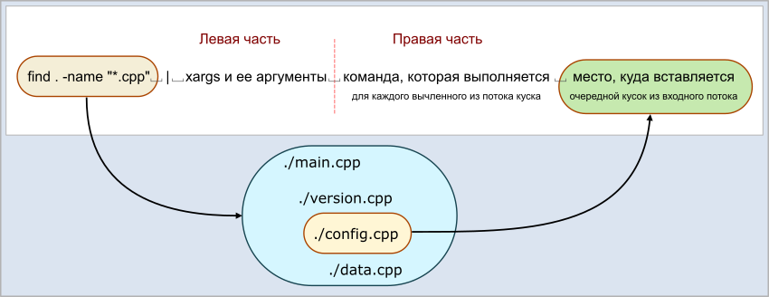

В Linux существует очень странная команда xargs, которую весьма любят гуру, но не спешат объяснять как она работает. Интернет завален рецептами "как пользоваться xargs", но ни в одном из них внятно не написано самого главного: что эта команда вообще делает.
Самое главное
В общих чертах везде написано одно и то же: команда xargs принимает входной поток (именно поэтому ее всегда предваряет какая-нибудь команда и символ перенаправления потока "|"), и каким-то волшебным синтаксисом выполняет указанную в ней команду.
На самом деле команда xargs делает вот что. (Попробую сформулировать предельно беспристрастно). Она разбивает поток символов, направляемых в нее, на куски. Для разбиения потока она использует символы-разделители. И для каждого выделенного куска она выполняет команду, которая указана в правой части, дополняя справа эту команду символами найденного куска.
Теперь то же самое, но с картинками. Синтаксически команда xargs состоит как бы из двух частей - левой и правой:
Причем однозначного визуального разделения, где левая, а где правая часть, просто нет. Если вы пытаетесь понять написанную другим человеком команду xargs, эту "границу раздела" нужно уметь находить самостоятельно. Вот несколько примеров:
|
Полная команда |
Левая часть |
Правая часть |
Примечание |
|
xargs rm -rf |
xargs |
rm -rf |
|
|
xargs -0 rm -rf |
xargs -0 |
rm -rf |
|
|
xargs -p -l gzip |
xargs -p -l |
gzip |
|
|
xargs tar -zcf pl.tar.gz |
xargs |
tar -zcf pl.tar.gz |
|
|
xargs -n2 fmv |
xargs -n2 |
fmv |
|
|
xargs -I file mv |
xargs -I file |
mv |
Да, тут нет ошибки |
|
xargs chown temp |
xargs |
chown temp |
|
|
xargs kill -9 |
xargs |
kill -9 |
|
|
xargs -p vim |
xargs -p |
vim |
То есть, здесь действует правило: если после xargs идут символы, предваряемые знаком минус "-", значит это опции команды xargs. Как только пошли символы без знака минус, значит это уже символы правой части. Но нужно учитывать, что некоторые опции xargs требуют после себя еще каких-то данных, которые не будут предваряться знаком минус (см. пример с опцией -I).
А теперь самое главное: какую же команду выполняет xargs? Куда она пихает пачку символов, которую она вычленила во входном потоке? Все просто: она кладет эти символы справа от команды, прописанной в правой части. Понимаю, тут два раза используется "право". Тогда вот картинка, которая все расставляет на свои места:

Возьмем конкретный пример. В каталоге лежат файлы:
main.cpp
main.h
version.cpp
version.h
config.cpp
config.h
data.cpp
data.h
Внутри этого каталога выполняется команда:
$ find . -name "*.cpp" | xargs -n 1 rm -rf
Какие команды сгенерирует xargs? Чтобы ответить на это, нужно понять, что будет подано на ее вход. А на вход будет подан результат работы команды find:
./main.cpp
./version.cpp
./config.cpp
./data.cpp
Команда xargs считает разделителем пробел, табуляцию или перевод строки (и их непрерывные последовательности). Таким образом, в итоге будут выполнены четыре команды:
rm -rf ./main.cpp
rm -rf ./version.cpp
rm -rf ./config.cpp
rm -rf ./data.cpp
Очень важное замечание про волшебную опцию
Есть одно очень важное замечание. Если вы его не осознаете, то не сможете нормально работать с xargs, и уподобитесь авторам статей, которые думают, что понимают как работает xargs, а на самом деле пишут лютую чушь. В вышеприведенном примере не просто так прописана опция "-n 1".
Опция "-n 1" заставляет xargs выполнять команду для каждого очередного куска из выходного потока. Да, понимаю, что это звучит бредово: ведь команда xargs и так должна делать именно это! В конце концов, в мануале написано следующее: "xargs reads items from the standard input, delimited by blanks (which can be protected with double or single quotes or a backslash) or newlines, and executes the command (default is /bin/echo) one or more times with any initial-arguments followed by items read from standard input." Проблема в том, что по-умолчанию, если не указать "-n 1", xargs воспринимает весь входящий поток, разбитый пробелами, табами, и переносами строк, как ОДИН аргумент. И по-сути, весь входящий поток просто подставляется в выполняемую команду. Вот так сюрприз от разработчиков!
Вопрос: А как же тогда срабатывают примеры, приводимые в статьях, типа
$ find . -name "*.cpp" | xargs rm -rf
$ find . -name "*.cpp" | xargs wc -l
А срабатывают они просто потому, что сами команды rm, wc и им подобные умеют работать с набором имен файлов. А пользователи ошибочно думают, что это xargs несколько раз вызывает данные команды для каждого имени файла. И чтобы в этом убедиться, можно воспользоваться опцией -t (печать команды, генерируемой xargs, перед ее выполнением). Но чтобы увидеть результат, нужно еще использовать конструкцию перенаправления вывода из потока ошибок 2>&1 (потому что использование опции -t даёт вывод в поток ошибок, а не в стандартную консоль). И вот что можно увидеть.
Если писать команду xargs без опции "-n 1", то произойдет следующее:
$ find . -name "*.cpp" | xargs -t rm -rf 2>&1
rm -rf ./main.cpp ./version.cpp ./config.cpp ./data.cpp
Видно, что вызвалась только одна команда rm, и ей передан список имен файлов. Просто результат её работы будет выглядет так, как будто она вызывалась отдельно для каждого файла.
Если же воспользоваться опцией "-n 1", то картина будет другая:
$ find . -name "*.cpp" | xargs -n 1 -t rm -rf 2>&1
rm -rf ./main.cpp
rm -rf ./version.cpp
rm -rf ./config.cpp
rm -rf ./data.cpp
Здесь поведение именно такое, как и обещалось. Помните об этой опции, и не удивляйтесь, что xargs работает как-то не так, если вы ее не используете. А еще помните, что во многих статьях в Интернете команды с xargs просто неработоспособны. Авторы думают что знают, какой должен быть результат, и даже не проверяют "очевидное", вследствие чего неподготовленый пользователь, который решит повторить то, что написано в статье, ничего толком не поймет.
Есть еще один тонкий момент. В xargs есть ограничение на длину входного потока. И если входной поток слишком большой, xargs таки разобъет его на два или больше куска, и для каждого куска все-таки вызовет отдельную команду, указанную в правой части. Чтобы таких непредвиденных ситуаций не было, пользуйтесь опцией "-n 1".
Команда xargs без аргументов
Иногда можно встретить обескураживающую конструкцию, типа:
tr -dc A-Za-z0-9_ < /dev/urandom | head -c 10 | xargs
Данная команда генерирует случайный пароль длиной 10 символов. Но что значит команда xargs без аргументов в конце этой команды?
Ответ прост. Команда xargs без аргументов на самом деле считает, что в ее правой части стоит команда /bin/echo. И пропускает входящий поток через команду echo. Зачем это нужно? В данном примере это нужно просто для того, чтобы итоговый результат завершался символом перевода строки. Вот пример, демонстрирующий разницу между командой, в которой нет xargs и есть xargs:
[user@host home]> tr -dc A-Za-z0-9_ < /dev/urandom | head -c 10
7jk2qx4cX8[user@host home]>
[user@host home]> tr -dc A-Za-z0-9_ < /dev/urandom | head -c 10 | xargs
zSlr2HsbSa
[user@host home]>
Пробелы в именах файлов
Так как xargs считает разделителями пробелы, табы и переводы строк, то возникает проблема с обработкой имен файлов, содержащих пробельные символы.
Обычно, имена файлов на вход программы xargs подается из результата работы команды find. И для решения этой проблемы у команды find есть опция "-print0". Она заменяет перенос строки на нуль-символ (\x0). А у команды xargs есть опция "-0" (минус ноль), с помощью которой входной поток разбивается на части, разделенные символом \x0.
Предположим, в директории появился файл с именем "new file.cpp". Если не пользоваться опциями преобразования перевода строк в нуль-символ, произойдет следующее:
$ find . -name "*.cpp" | xargs -n 1 -t rm -rf 2>&1
rm -rf ./new
rm -rf file.cpp
и, естественно, файл "new file.cpp" не будет удален. Если же добавить вышеприведенные опции, то команда сработает правильно:
$ find . -name "*.sh" -print0 | xargs -n 1 -t -0 rm -rf 2>&1
rm -rf ./new file.cpp
Самый главный вопрос
А как же конструировать команды, в которых нужно не просто добавить справа найденные последовательности символов? Дописать.